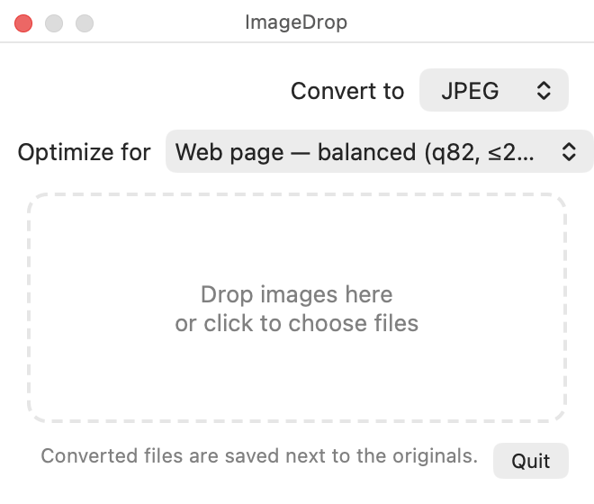

A tiny menu bar app for your Mac that converts PNG, JPEG, WebP, HEIC and more — with one drop, and a compression preset that fits where the image is going.
Free · macOS 12 or later · Apple silicon & Intel · All releases

It lives in your menu bar and stays out of the way until you need it.
Drop a HEIC from your iPhone and get a JPEG. Turn a PNG into a WebP for the web. The converted copy is saved right next to the original.
Pick where the image is going — web page, social media, email, thumbnail — and ImageDrop chooses sensible quality and size limits for you.
Everything happens on your Mac using Apple's built-in image engine. Nothing is uploaded, no account, no tracking.
Drop a whole selection of files at once, or use “Open With” from Finder. Photos are auto-rotated the right way up.
ImageDrop is a free, independently made app, so macOS asks you to confirm the first launch.
xattr -dr com.apple.quarantine /Applications/ImageDrop.appWebP export uses the free cwebp tool from Homebrew (brew install webp). Every other format works out of the box.
ImageDrop is free and always will be. If it saves you time, a small tip helps keep it maintained. The panel on the right takes Apple Pay or any card — no account needed, and your tip goes straight through.
Prefer a separate page? Open the tip jar on Ko-fi.